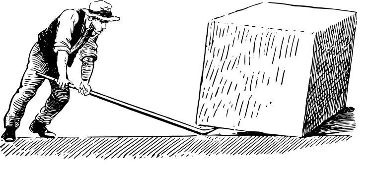
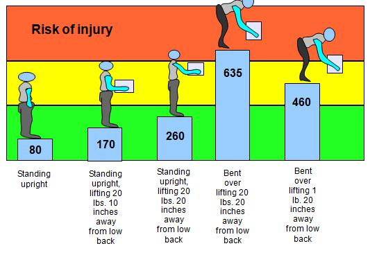

Lower Back Pain
What you need to know about your back pain
Back pain will eventually effect nearly everyone at one time. In 1998 the healthcare cost for lower back pain was estimated to be around 26.3 billion dollars. It is now thought that as a nation, we spend at least 50 billion dollars for lower back pain.
Why do so many of us get back pain?
Partially, the reason that so many of us have back pain is that the low back pain is a vulnerable area. Many of the activities that we perform each day put a lot of stress on this area.
To make it understandable, when a person bends forward only 40 degrees, the amount of force placed on the lower back is more than double the force felt in the back when just standing upright.
Much of the force that is exerted on the lower back is because the lower back is subject to a large lever, the upper back. When we bend forward the weight of the upper back generates a lot of force on the lower back. The longer the lever, the larger amount of force that can be generated.
To understand the power that can be generated with a lever, think of what happens when you place a long bar under a heavy weight, the ability to move that large weight is greatly increased.

In the following graph it shows how when we bend forward, the forces increase in the lower back. When we are holding weight in our hands, the amount of force placed on our lower back is greatly increased.
Pounds of compressive force experienced in the low back

It has been estimated that a 220 lb person who holds an 80 lb. object while bending over 60 degrees, experiences over 1000 pounds of force on the lower back! It is amazing how much stress we commonly place on our lower back and discs.
Protect Your Back
Because of the high forces that are experienced in the lower back, it is imperative to have good posture and use good lifting techniques.
When lifting objects, it is important to remember to hold the object that you are lifting as close to the body as you comfortably can. The further away the object is away from the body, the greater the amount of pressure that will be placed on the lower back. If possible, use your knees and hips to bend down when you are picking up an object.
Most of our Backs are Weak
Another reason why a lot of us suffer with lower back pain is because of our lack of physical activity. Many of our jobs require us to sit and sit and …. sit, in front of a computer. This sitting is continuously putting a static load on our back, while at the same time promoting weak and faulty muscles that are meant to support and protect the back.
When the muscles in the lower back become weak and faulty, people tend to curve their back when bending over. The bowing out of the back makes it so that the muscles can no longer provide sufficient protection to the lower back.
The ligaments and the discs now have to bear all the stresses by themselves. The end result...A hurt back.
What are good back exercises?
Exercise, in general, is good as long as you don't over do it. Don't do too many types of exercises that will place large amounts of stress on the lower back.
To know what types of exercises will create too much stress on the lower back, remember that the upper back can act as a lever on the lower back, and exercises that require you to bend over with weight will put more pressure on the lower back. Those exercises that put you in a bad posture, such as bending over with the back bowing out, should definitely be avoided.
To better understand what types of exercises can be of a benefit, or detrimental, question your doctor or your chiropractor.
Is Chiropractic good for treating Lower back pain?
Chiropractic is effective in the treatment of lower back pain. Studies have been done that show that chiropractic treatments are superior to medication in improving the symptoms of lower back pain.
When your deciding what to do to help your back pain, it has been advised to try more conservative methods first. This is because the side effects are less likely with conservative forms of treatment.
Because of it's ability to help with lower back pain while being relatively safe for the lower back, chiropractic treatments are a good conservative form of treatment to start with.
If you are suffering with back pain, don't wait until your problem becomes chronic to try to get the help that you need. As a condition becomes more chronic, it will often become more difficult to change conservatively.
Set up an appointment today to begin your pathway to a better back.